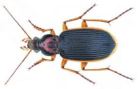
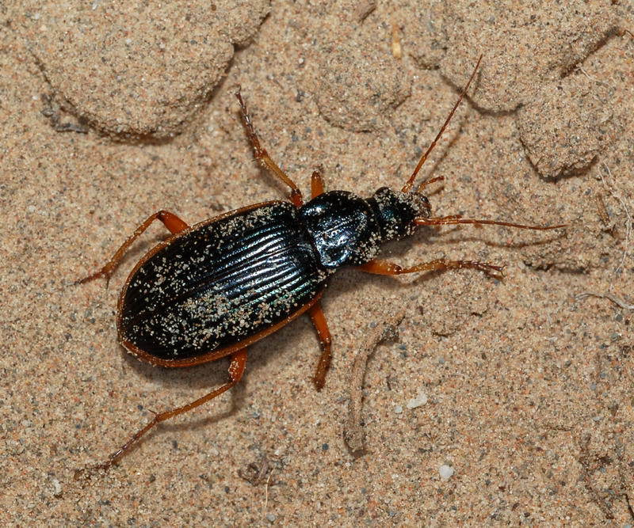
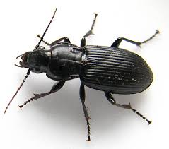

☀️
The Epomis beetle is a highly unusual and fascinating insect, best known for its rare role as a predator of amphibians. Unlike most beetles, which avoid animals larger than themselves, Epomis beetles have evolved a unique hunting strategy that allows them to prey on frogs and toads. This makes them one of the few insects capable of turning the tables on animals that normally eat insects.
Epomis beetles are ground beetles found mainly in parts of Europe, the Middle East, and Asia. They are active mostly at night and live in moist habitats such as near ponds, streams, and wetlands where amphibians are common. Both the larvae and adults are predators, but the larvae are especially specialized. They use subtle movements to attract amphibians, triggering a feeding response. When the amphibian gets close, the beetle larva attaches itself and begins feeding.
Adult Epomis beetles are strong and agile hunters, using their powerful jaws to capture prey. Their bodies are typically metallic green or bronze, which helps them blend into their surroundings while also giving them a striking appearance.
Scientists are particularly interested in Epomis beetles because of their unusual predator–prey relationship. They challenge the typical food chain structure and show how insects can evolve highly specialized behaviors. This makes the Epomis beetle an important example of adaptation and ecological balance in nature.


